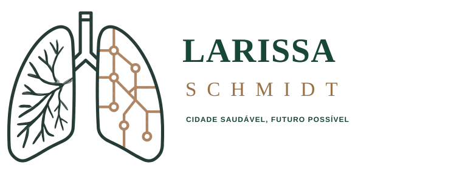

Tarifa Zero
Eu vou destinar recursos para fortalecer o projeto Tarifa Zero, porque transporte público gratuito é mobilidade, dignidade, economia no bolso e direito de ir e vir.

Larissa Schmidt InstagramPolítica pública de verdade
Meio ambiente, mobilidade e presença feminina tratados como uma única agenda: cidade saudável, ruas vivas e futuro possível.

História
Larissa Schmidt é apresentada publicamente como advogada especializada em conflitos ambientais, professora de Direito Ambiental e Internacional, doutora em Direito Ambiental pela UnB e mestre em Relações Internacionais pela UFSC. Também consta em seu perfil público experiência em mudança do clima, atuação em negociação internacional e docência no UniCEUB.
Visão integrada
Meio ambiente não é uma pauta isolada. Ele aparece no transporte que reduz tempo perdido, na drenagem que evita ruas alagadas, nas áreas verdes que melhoram a saúde e na assistência social que chega a quem mais precisa. Quando a cidade respira melhor, a vida das famílias também melhora.
Essa é a conexão central: planejamento urbano, qualidade de vida, mobilidade e cuidado social funcionando juntos para um DF mais justo, seguro e preparado para o futuro.
Soluções verdes que ajudam a absorver a água da chuva, reduzir alagamentos e transformar ruas problemáticas em espaços mais seguros, especialmente onde a cidade vira rio quando chove.
Defesa do território, da água, da arborização e do ar que a população respira todos os dias.
Política climática técnica, responsável e conectada ao cotidiano das cidades, sem discurso vazio.
Mais sombra, menos calor e bairros mais agradáveis: áreas verdes bem cuidadas melhoram saúde, segurança e convivência.
Cuidar da água é cuidar do futuro do DF, com atenção especial às áreas sensíveis e aos impactos da ocupação urbana.
Escolas, comunidades e poder público podem transformar consciência ambiental em cuidado prático com a cidade.
Para acompanhar ideias, agenda e bastidores, acesse o perfil oficial.
Abrir Instagram